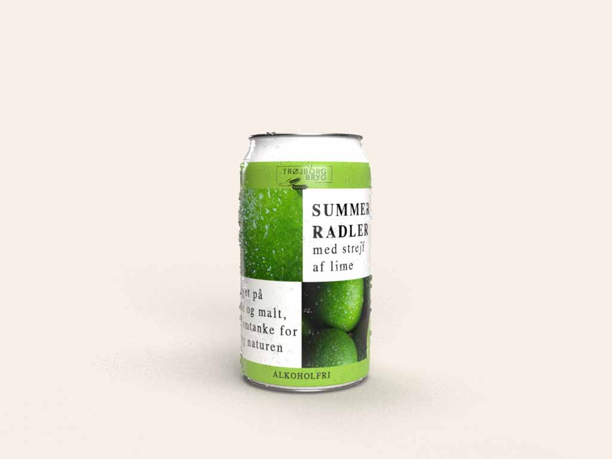
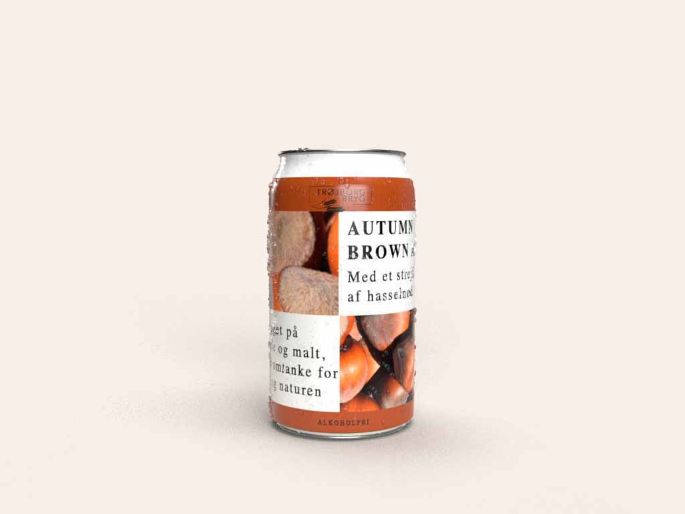
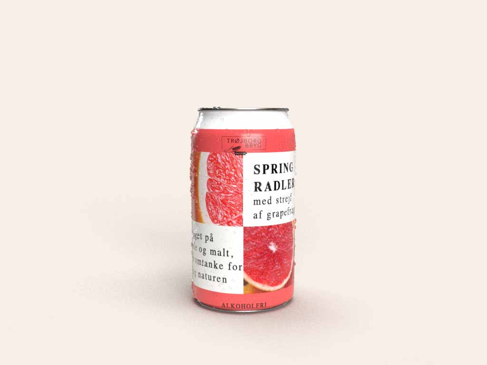
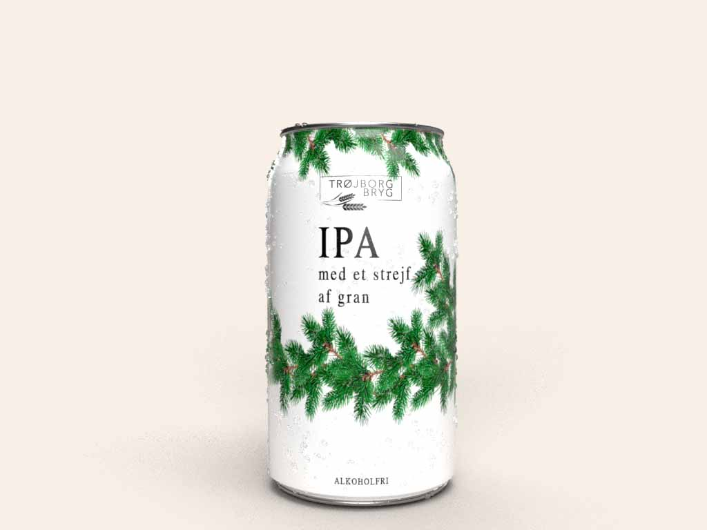

Vores udvalg
SUMMER RADLER
En lækker forfriskende og let drikkelig øl skabt til at omfavne sommerens øjeblikke. Øllen har en let sødme og en lav bitterhed.Vores summer radler er en lys øl perfekt balanceret med en frisk blanding af lime-lemonade. Denne kombination giver en forfriskende let drik, ideel til en varm sommerdag. Nydes kold på stranden, til sommerfesten eller hjemme på terrassen. Sommer radler´s forfriskende karakter gør den passende til fiskeretter, kylling eller en lækker salat.

AUTUMN BROWN ALE
Autum brown ale er en let efterårsøl. Øllen har en fyldig nøddeagtig smag der leder tankerne hen på efterårets varme farver. Nydes til krydret mad, såsom barbecue eller en gryderet.

SPRING RADLER
En lækker forfriskende og let drikkelig øl skabt for at bidrage til dine forårsoplevelser. Dens lette sødme og lave bitterhed, skaber en afbalanceret frisk smag. Vores forårs radler er en lys øl kombineret med grapejuice, for at tilføje et frugtagtigt element, hvilken gør den til den edielle øl til festlige begivenheder. Nydes kold som en frisk drink, til en forårsfest, eller tag den med på en picnic. Øllen komplimenterer særligt forskellige grillede retter, eller grøntsager.

IPA
Vores juleøl er i år brygget med tankerne på den særlige tid på året, hvor juletræet skal findes. Duften af gran fylder luften og følelsen af sneen under støvlerne. Denne lyse juleøl har markant bitterhed som spiller godt sammen med den krydret smag, med et strejf af gran. Øllens høje bitterhed der gør den velegnet til krydrede retter eller et stykke saftigt kød, fisk eller på julebordet.
